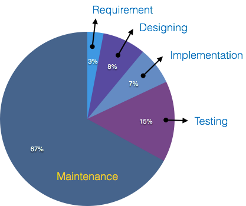

Chapter 1Introduction to Software Engineering
1Defining the Discipline
To understand software engineering, we must first dissect its two constituent components: software and engineering.
Software: Far beyond simple, standalone executable code, software is comprehensively defined as:
It comprises executable code that serves a computational purpose, the structural data architectures it manipulates, and the technical documentation required to operate, maintain, and understand it. When built to fulfill a specific operational requirement, it constitutes a software product.
Engineering: The branch of science and technology concerned with the systematic design, building, and utilization of engines, machines, and structured solutions. It applies scientific principles, tools, and formal methods to solve both simple and complex problems efficiently and cost-effectively.
According to the IEEE Computer Society's Guide to the Software Engineering Body of Knowledge (SWEBOK), software engineering is formally defined as:
Software Engineering(IEEE)
The application of a systematic, disciplined, quantifiable approach to the development, operation, and maintenance of software.
Software Engineering
Software engineering is a discipline within computer science focused on applying systematic, disciplined, and quantifiable engineering principles to the development, operation, maintenance, and evolution of software systems.
Note
The Indispensability of Principles: While small programs can be developed casually without software engineering principles and methodologies, structured engineering approaches are indispensable if we want to achieve high-quality software in a reliable, predictable, and cost-effective manner.
1.1Lehman's Classification of Software Types
Not all software behaves or evolves in the same way. Computer scientist Manny Lehman classified software into three distinct categories based on how they interact with their environment and how their requirements evolve over time:
S-Type (Static / Specified):
Characteristics: Built with a well-defined specification and an obvious, unchanging solution. Once written, the program rarely needs fundamental alterations.
Example: A standard calculator program designed to perform basic arithmetic (addition, subtraction, multiplication, division). Once the logic for these operations is correctly implemented, the problem is permanently solved.
P-Type (Procedural):
Characteristics: The controlling procedures and rules are well-defined, but the exact solution depends entirely on dynamic runtime inputs and opponent actions.
Example: Chess-playing software. While the rules of chess are completely fixed, the computer's next move cannot be predetermined statically; it must be calculated dynamically based on the opponent's moves during actual gameplay.
E-Type (Evolving):
Characteristics: Represents the vast majority of real-world commercial software. Both the problem specification and the solution are tightly coupled to a constantly changing operational and social environment.
Example: E-commerce systems like Amazon. These platforms continuously evolve hour by hour to adapt to shifting economic environments, updated user requirements, changing business rules, and new feature requests.
2Complexity Management: Abstraction and Decomposition
Without software engineering principles, developing large-scale commercial programs becomes extraordinarily difficult because the complexity and difficulty of programs grow rapidly as they get bigger. To control this growth in complexity, software engineering relies on two main techniques:
Abstraction: Simplifying a complex problem by ignoring minor details and focusing only on the main concepts needed for a specific task. Once the simpler big-picture problem is solved, the omitted details can be added back in at lower levels of design.
Decomposition: Breaking a large, complicated problem down into several smaller, manageable parts that can be solved one by one. The trick is to split the problem so that each smaller piece can be worked on independently, and their solutions fit together seamlessly. A good design keeps the connections between these pieces as simple and minimal as possible so they don't depend too heavily on each other.
Real-World Example: Building a University Student Portal
To see how these principles work in practice, consider building a university registration and student portal:
Applying Abstraction: When designing the tuition fee payment screen, developers use abstraction to hide the messy, low-level implementation details behind a clean, unified boundary. Instead of dealing with the fact that each local bank has its own distinct internal workings—such as whether a bank uses a SOAP protocol, a REST API with specific JSON payloads, or a completely different messaging format—the core registration system doesn't need to worry about any of that behind-the-scenes complexity. It simply sends a standardized request, like asking to process a payment, and receives back a straightforward status response indicating success or failure. This keeps the core application logic simple, independent, and much easier to maintain.
Applying Decomposition: Instead of writing the entire portal as one massive, tangled block of code, engineers break it down into independent modules:
Student Login & Authentication Module (Handles passwords and user security).
Course Prerequisite Checker (Checks if a student has passed required classes before letting them register).
Financial Clearance Ledger (Tracks tuition balances and holds).
Class Schedule Manager (Manages room capacities and time slots).
By separating the system into these independent modules, developers can update the payment system or fix a scheduling bug in one module without accidentally breaking the rest of the portal.
2.1Architectural Breakdown: High-Level vs. Low-Level Design
When transforming software requirements into a robust blueprint during the design phase, software engineering divides the architecture into two distinct tiers of granularity: High-Level Design (HLD) and Low-Level Design (LLD). This separation ensures that system-wide structural decisions are resolved before committing to module-specific implementations and team resource allocations.
High-Level Design (HLD): Often referred to as macro-level or architectural design, HLD focuses on the overarching structure of the system rather than internal minutiae.
Platform Determination: Decides the target environments where the system will operate (e.g., choosing whether the application will deploy as a web platform, a native mobile app for Android and iOS, or a hybrid solution).
Module Isolation: Divides the massive system into major functional components (modules) and maps out how they interact and exchange data with one another.
Team Independence: At the high-level stage, architectural boundaries are drawn without yet assigning individual team members or specific developers to those modules.
Low-Level Design (LLD): Often referred to as micro-level or detailed design, LLD drills down into the internal mechanics of each individual module defined during HLD.
Granular Component Design: Specifies internal logic, data structures, algorithm workflows, and detailed interface signatures for every module.
Resource Assignment: Allocates specific roles and responsibilities to individual team members and developers within those modules (e.g., assigning a particular developer as a module lead or component designer).
Note
High-level design shapes the big-picture environment and communication pathways of the software, while low-level design bridges the architecture directly into executable tasks and team assignments.
3The Need for Software Engineering
While a small program or script can be successfully written casually by an individual without formal methods, developing large-scale commercial or industrial software requires a disciplined engineering framework. The need for software engineering arises primarily because of the ever-changing nature of user requirements and the dynamic environments in which software operates.
The core drivers that make software engineering indispensable include:
Managing Large-Scale Systems: Just as building a massive bridge or skyscraper requires rigorous structural engineering rather than the intuitive methods used to build a small wall, large-scale software systems—comprising multiple interconnected modules and thousands of concurrent transactions—require systematic processes to manage their immense structural complexity.
Ensuring Scalability: If software development is not rooted in scientific and engineering principles, expanding or scaling an existing system becomes so difficult and brittle that it is often faster and cheaper to rewrite the software from scratch rather than modify it.
Controlling Costs: While the hardware industry has successfully driven down the cost of physical computers and electronic components through advanced manufacturing, software development costs remain high—and often spiral out of control—unless a disciplined, cost-effective engineering process is adopted.
Adapting to Dynamic Environments: Software does not operate in a vacuum; it constantly adapts to changing user needs, updated operating systems, and evolving business rules. Because software must frequently evolve, structured engineering practices are essential to handle ongoing enhancements safely.
Driving Quality Management: Adopting a repeatable, standardized development process ensures that the resulting software product meets rigorous quality benchmarks, remaining functional, reliable, secure, and maintainable over its entire lifecycle.
4Foundations of Software Engineering
4.1The Historical Context: The "Software Crisis"
Historically, software engineering as a distinct field emerged in the late 1960s. During the first generation of computing, software took a back seat; the primary focus was on building hardware capable of solving a limited set of scientific and military problems. However, as hardware advancements made computers smaller, faster, and more accessible to universities and businesses, users began demanding complex, diverse commercial applications (such as payroll, accounting, and inventory management).
Human programming techniques, which treated software development as an ad-hoc art or individual craft, could not keep up with this growing demand. The industry reached a critical bottleneck known as the Software Crisis.
4.1.1The 1968 NATO Conference
The crisis was officially brought to light in October 1968, when around 50 eminent computer scientists gathered in Garmisch, Germany, for a NATO-sponsored conference. The purpose of the meeting was to address the severe shortcomings in software production. The conference produced a landmark 130-page report advocating for software development based on practical and theoretical principles, drawing inspiration from traditional engineering disciplines like civil and mechanical engineering.
While the phrase "Software Engineering" had been used informally a few times prior (notably by Margaret Hamilton during the Apollo program), the NATO Science Committee deliberately chose it as the title of the conference. This sparked a provocative and necessary debate: Could the chaotic process of writing software be disciplined, structured, and measured like building bridges or airplanes?
The conference officially diagnosed the "Software Crisis," characterized by systems that were:
Consistently delivered over budget and severely behind schedule.
Highly unreliable, buggy, and nearly impossible to maintain.
So complex that no single programmer could fully understand them.
Crucially, the 1968 conference shifted the industry's focus from merely "writing code" to managing the entire Software Lifecycle. It introduced foundational concepts that remain vital today:
Software Design: Planning the architecture before writing code.
Software Production: Managing teams, deadlines, and tracking progress.
Software Maintenance: Recognizing that fixing and updating code post-delivery is a massive, long-term endeavor.

4.2The Unique Nature of Software: "No Silver Bullet"
More than half a century after the NATO Conference, techniques for software construction have improved remarkably. We now utilize design patterns, reusable libraries, automated testing, and robust frameworks to avoid reinventing the wheel. However, software development possesses unique characteristics that separate it from traditional hardware engineering.
Frederick Brooks, a pioneer in Software Engineering and recipient of the 1999 Turing Award, underscored this fact in his seminal 1987 essay, "No Silver Bullet: Essence and Accident in Software Engineering." Brooks argued that there is no single magical technology or management technique (a "silver bullet") that will miraculously improve software productivity by an order of magnitude.
Brooks categorized the difficulties of software engineering into two types: Essential Difficulties and Accidental Difficulties.
Note
the term silver bullet, as used in Brooks’s essay title, refers to a magical solution to a complex problem. Brooks argued that due to the essential difficulties, we should not anticipate the existence of silver bullets in the field. Nonetheless, novel software technologies are often marketed as if they were, in fact, silver bullets.
4.2.1Essential Difficulties
These are intrinsic to the very nature of software and are unlikely to be solved by novel technologies. Brooks identified four primary essential difficulties:
Complexity: Software is one of the most intricate human-made constructions. Unlike physical objects, software components scale non-linearly, making large systems inherently complex.
Conformity: Software must adapt continuously to its ever-changing environment (e.g., new operating systems, hardware, or tax legislation). Unlike the laws of physics, the "laws" of software's environment change due to human decisions.
Changeability: There is constant pressure for software to evolve. The more successful a software product is, the more likely it is to attract requests for new features and modifications.
Invisibility: Software is inherently abstract. It is challenging to visualize its geometric structure or spatial complexity, unlike a car or a building, which can be easily evaluated by consumers.
Note
Challenges 2, 3, and 4 are largely exclusive to software. When environmental laws change, car manufacturers have years to comply, and a manufactured car does not spontaneously receive new functionalities.
4.2.2Accidental Difficulties
These are difficulties not inherent to the software itself, but rather attached to the current tools and practices used to produce it. These can be addressed through better training, tools, and technologies. Examples include:
An IDE (Integrated Development Environment) that frequently crashes.
A compiler with cryptic, unhelpful error messages.
A third-party framework lacking proper documentation.
A web application with a confusing, unintuitive user interface.
While eliminating accidental difficulties improves developer experience, Brooks warned that it will not solve the fundamental essential complexities of building large software systems.
4.2.3The Scale and Complexity of Modern Systems
The essential difficulty of complexity highlighted by Brooks is best illustrated by the sheer scale of modern software systems. Today, the open-source projects supported by the Linux Foundation comprise over 1.7 billion lines of code and involve 65,000 active developers (Linux Foundation, 2023). Specifically, the Linux kernel—the core component of the operating system—contains more than 30 million lines of code. Similarly, tech giants like Google have reported that their internal systems consist of billions of lines of code.
Managing systems of this magnitude, ensuring they remain reliable, secure, and adaptable over decades, is the ultimate challenge of our field. It is precisely because of this immense scale and complexity that Software Engineering remains not just a technical skill, but a critical, disciplined science essential to the modern world.
5The Economics of Software Development
5.1The Cost of Change Curve (Boehm's Curve)
The earlier you catch a defect in the software development lifecycle, the cheaper it is to fix it.

Barry Boehm’s theorem mathematically demonstrates why skipping disciplined engineering practices is financially ruinous across development phases:
Requirements Phase: Finding and fixing an error during requirements costs a baseline of 1x.
Design Phase: Finding that same error during design costs roughly 5x.
Build Phase: Finding it during building and coding costs 20x.
Test Phase: Finding it during testing costs 50x.
Production / Post-Release: Fixing a structural error after release escalates dramatically to 150x the original baseline.
Rigorous requirements gathering and architecture design catch critical flaws early when they are cheapest to mitigate.
5.2Distribution of Software Lifecycle Costs
Coding and construction represent only a fraction of total expenditures. Following Ian Sommerville's framework, software costs are distributed as follows:
Development (Specification, Design, Coding, Testing): Accounts for approximately 30–40% of the total budget.
Evolution (Maintenance, Upgrades, Bug Fixes): Accounts for 60–70%+ of the total lifecycle budget.
Without strict software engineering practices—such as documentation, clean architecture, and modularity—the evolution phase becomes prohibitively expensive, eventually draining organizational resources just to keep legacy systems operational.

6Characteristics of Good Software
A high-quality software product can be judged by what it offers and how well it can be used. Well-engineered and crafted software must satisfy criteria across three vital dimensions: Operational, Transitional, and Maintenance.
6.1Operational Qualities
This dimension measures how well the software performs during daily execution and active use. Key metrics include:
Correctness: The extent to which the software satisfies its specified requirements and accurately executes its intended user tasks.
Efficiency: How well the software utilizes system resources (such as CPU cycles, memory allocation, and network bandwidth) without unnecessary waste.
Dependability & Reliability: The trustworthiness of the system, ensuring it functions without catastrophic failures over a given period.
Security & Safety: Protection of data assets against unauthorized access, alongside ensuring the system does not cause physical, financial, or operational harm.
Usability & Budget: The ease with which users can interact with the system, balanced against strict adherence to financial development constraints.
6.2Transitional Qualities
This dimension evaluates how smoothly the software adapts when it is transitioned from one operating platform, environment, or organization to another:
Portability: The ability of the software to run across different hardware platforms or operating systems with minimal modification.
Interoperability: The capability of the system to communicate and exchange data seamlessly with other external software applications or third-party legacy services.
Reusability: The extent to which parts of the software code and architecture can be packaged and reused in building other systems.
Adaptability: The readiness of the system to adjust smoothly to emerging technological shifts.
6.3Maintenance Qualities
This dimension addresses how easily a system can maintain itself and evolve within an ever-changing operational environment:
Modularity: Decomposing the system into discrete, loosely-coupled components so that changes in one area do not ripple across others.
Flexibility & Maintainability: The ease with which bugs can be corrected, features enhanced, or components modified over time.
Scalability: The capability of the system to gracefully handle increasing loads, larger databases, or expanded user volumes without performance degradation.
7Topics of Study
To present the topics of study in software engineering, we refer to the Guide to the Software Engineering Body of Knowledge, also known as the SWEBOK (link). This comprehensive report is organized by the IEEE Computer Society, an internationally recognized scientific society. It is crafted with the expertise of numerous researchers and industry professionals. The aim of the report is to document and compile the body of knowledge that defines the field we now recognize as software engineering.
The SWEBOK defines the following key areas of Software Engineering:
Software Requirements
Software Architecture
Software Design
Software Construction
Software Testing
Software Engineering Operations
Software Maintenance
Software Configuration Management
Software Engineering Management
Software Engineering Processes
Software Engineering Models and Methods
Software Quality
Software Security
Software Engineering Professional Practice
Software Engineering Economics